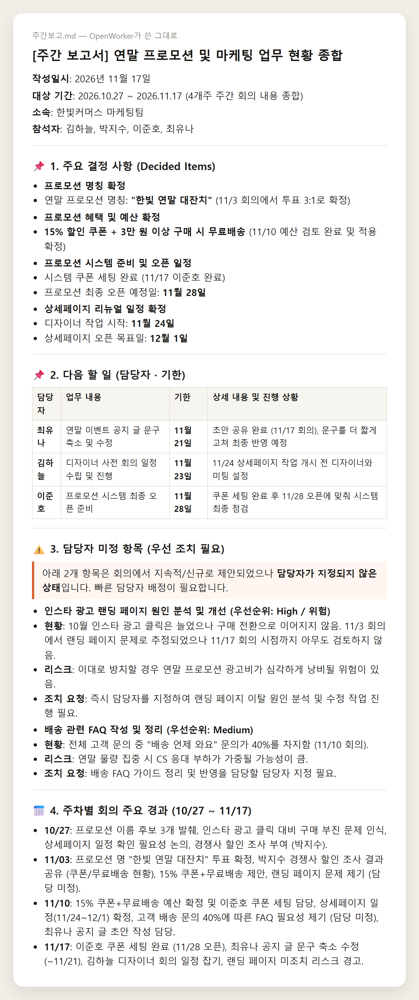
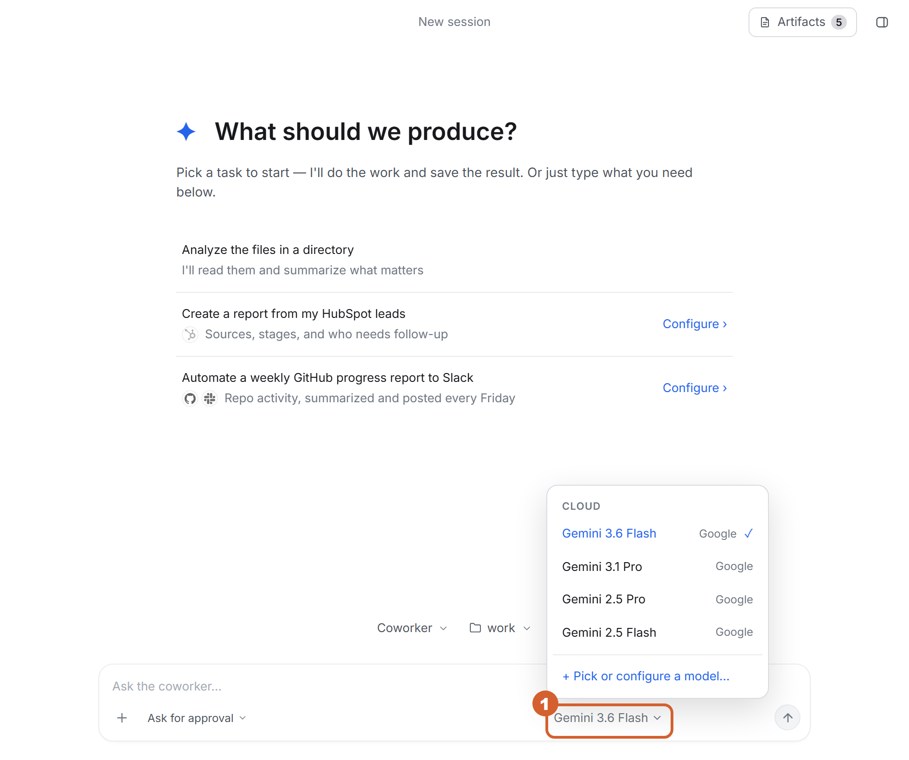
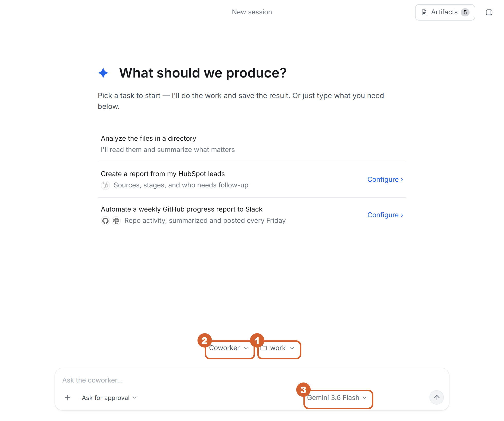
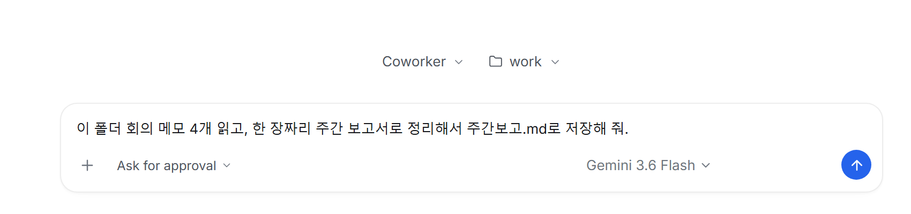
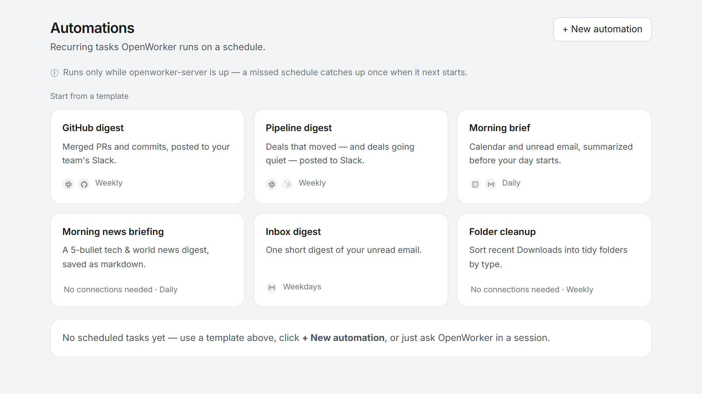

내 컴퓨터에 깔아 쓰는 AI 직원 앱이에요. 폴더 하나를 정해 주면 그 안 파일을 직접 읽고, 시킨 일을 할 일 목록으로 나눠 하나씩 끝낸 뒤 결과를 파일로 저장해요. 같은 일을 매주·매일 정한 시각에 다시 하게 예약할 수 있고, 파일을 고치기 전엔 먼저 물어봐요. 앱은 깃허브 공개 오픈소스(MIT)라 무료고, 모델은 쓰던 챗GPT 구독·API 키·내 컴퓨터 모델 중에 골라요.

openworker.com 또는 깃허브 README의 다운로드 링크에서 맥은 dmg, 윈도는 설치 파일을 받아요. 윈도는 아직 코드 서명 전이라 '보호된 PC' 경고가 뜨면 '추가 정보 → 실행'을 눌러요. 로그인 없이 써도 돼요.
아래 입력창의 모델 이름(1)을 누르고 'Pick or configure a model…'로 들어가요. Settings → Models & Keys에서 챗GPT 구독으로 로그인하거나(키 없음), API 키를 붙여 넣거나, 내 컴퓨터의 올라마를 연결해요. 이 정리의 결과는 제미나이 3.6 Flash로 만들었어요.

입력창 위 폴더 이름(1)을 눌러 일을 맡길 폴더를 골라요. OpenWorker는 이 폴더 안 파일만 읽고 써요. 'Coworker'는 일반 업무용 직원이라 그대로 두면 돼요.

무엇을 읽고, 어떤 모양으로, 어디에 저장할지를 한 줄에 적어요. 그러면 할 일 목록(오른쪽 Progress)을 먼저 세우고 하나씩 지워 가며 일하고, 끝나면 파일 링크를 줘요. 이 편에선 메모 4개 → 주간보고.md까지 약 50초 걸렸어요.

결정된 것, 누가 언제까지 할 일, 담당 없는 일이 한 장에 나와요. 같은 대화에서 '다음 할 일을 더 구체적으로, 담당 없는 건 표시해 줘'처럼 이어서 고치면 돼요. 날짜·요일 같은 사실은 원본 메모와 꼭 맞춰 봐요.
보고서가 내 폴더에 쌓이게 하려면, 그 폴더로 연 대화에서 '매주 월요일 오전 8시에 이 일을 다시 해 줘'라고 걸어요(예약을 만들 때 뜨는 확인 카드는 허락). 왼쪽 Automations의 '+ New automation'으로 만든 예약은 예약 전용 폴더(OpenWorker 폴더 안 __task__…)에 저장돼요. 예약 실행 중 그 작업 폴더 안에 파일을 쓰는 건 묻지 않고 바로 해요 — 이 편에서 예약을 걸어 실제로 주간보고.md가 저장되는 걸 확인했어요. 대신 웹 검색·명령 실행·메일 같은 연결 앱을 쓰는 일은 승인 요청이 받은 편지함(Inbox)에서 기다려요. 그런 예약이면 처음 한 번 Inbox에서 '매번 허락(Allow every time)'을 눌러 두세요. 예약은 앱이 켜져 있을 때만 돌고, 꺼져 있던 동안 놓친 예약은 다음에 켜질 때 한 번 따라잡아요.

회의 메모가 쌓였을 때
이 폴더 회의 메모 4개 읽고, 한 장짜리 주간 보고서로 정리해서 주간보고.md로 저장해 줘. 결정된 것, 다음 할 일(담당·기한), 담당 없는 일은 따로 표시해 줘.
보고서를 매주 받고 싶을 때
매주 월요일 오전 8시에 이 폴더 메모를 다시 읽고 주간보고.md를 새로 써 줘. 지난주 보고서는 날짜를 붙여 남겨 둬.
뭘 살지·고를지 정할 때
100만 원 아래 사무용 노트북 3개를 웹에서 찾아서 무게·배터리·가격을 표로 비교하고, 비교표.md로 저장해 줘. 출처 링크도 붙여.
PDF·문서가 많을 때
이 폴더 문서를 다 읽고, 문서마다 세 줄 요약과 꼭 볼 숫자를 정리해서 요약.md로 저장해 줘. 원본 파일은 건드리지 마.
도움이 되셨다면
@ai.antenna.kr
에서 바로 쓰는 AI 활용법을 계속 올립니다.